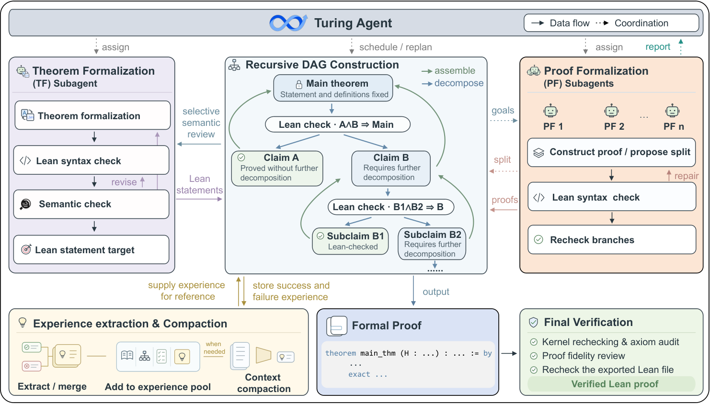
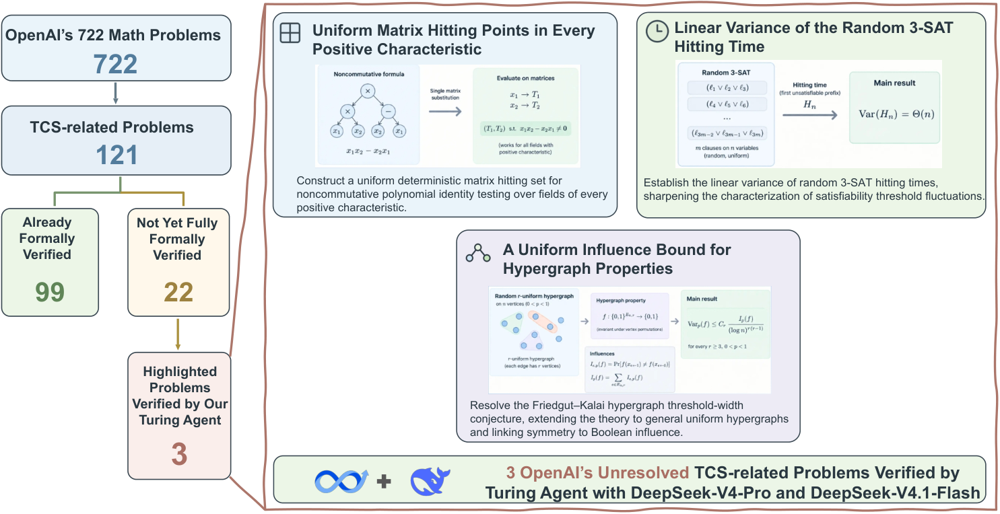

LLM agent harness that formalizes research-level TCS theorem statements and proofs in Lean using Mathlib and CSLib, checked by Lean's kernel.
Abstract
Large language models (LLMs) are rapidly advancing mathematical discovery, moving beyond benchmark-level problem solving to tackle frontier research problems. This progress is ushering mathematics into an era of proof abundance, raising a fundamental challenge: how can we ensure the correctness of the ever-growing volume of AI-generated proofs and transform them into trustworthy, machine-verified mathematical knowledge? We introduce Turing Agent, an agent harness designed to orchestrate end-to-end formal verification of research-level mathematics. Its wo-scale architecture integrates theorem formalization and proof formalization agents, empowered by structured proof decomposition, parallel verification, accumulated proof experience, and selective semantic review. Leveraging our collaborations with theoretical computer science (TCS) researchers, we focus our evaluation on TCS, a particularly demanding domain characterized by intricate quantification, complex dependencies, and stringent semantic requirements. Against direct generation and general-purpose coding harnesses, including Codex CLI and Claude Code, Turing Agent achieves approximately 57-62% faithful formalization success on Formal TCS Bench and 83% overall pass@1 on a TCS-focused subset of RLMEval, using GLM-5.3 and DeepSeek-V4-Pro. Notably, Turing Agent, built on DeepSeek, successfully completes the formal verification of three previously unresolved TCS tasks from OpenAI's October 2026 collection. One particularly challenging TCS problem required about a hundred formally verified auxiliary claims. Moreover, by actively exploring and refining the formalization process, Turing Agent can uncover simpler alternative proofs, expose unnecessary dependencies in original proofs, and generate reusable mathematical knowledge as a byproduct of verification.
Problem
AI systems now generate research-level mathematical proofs at scale, and their correctness has to be checked. Formalizing research papers requires translating definitions and statements faithfully as well as building proofs, and a Lean statement can compile while silently changing the meaning of the original claim.
Approach
Turing Agent uses a two-scale architecture. Theorem formalization agents search Mathlib and CSLib, add missing definitions, and produce Lean statements that pass both Lean checking and a semantic review. Proof formalization agents then build Lean proofs from the informal arguments. The proof formalization stage uses structured proof decomposition with a dependency DAG, parallel verification, an experience pool, and selective semantic review of intermediate claims.

Figure 2 : Turing Agent coordinates theorem formalization (TF) and proof formalization (PF) agents. TF agents provide checked Lean statements and definitions, while PF agents construct proofs and request semantic review when needed. The resulting proof undergoes final verification. In its runtime, Turing Agent coordinates recursive DAG construction, parallel proof formalization, and selective sema
Results
With GLM-5.3 and DeepSeek-V4-Pro, the agent reaches about 57-62% faithful formalization success on Formal TCS Bench and 83% pass@1 on a TCS-focused subset of RLMEval (PFR and TestingLowerBounds), beating direct generation, Codex CLI and Claude Code. It also fully formally verified three previously unverified TCS problems from OpenAI's research manuscript collection, one of which needed about a hundred verified auxiliary claims.

Figure 3 : Research-level TCS verification beyond standard benchmarks. Of the 121 TCS problems in OpenAI’s mathematical research collection, 22 had not been fully verified in Lean. Among these, we highlight three examples formally verified by Turing Agent using DeepSeek-V4-Pro and DeepSeek-V4.1-Flash.